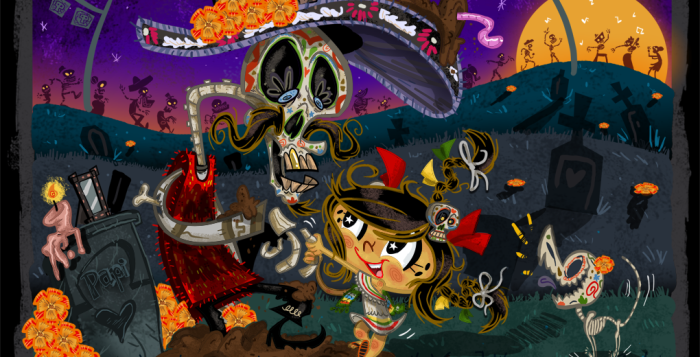

"Festividad del dia de muertos en México"
¿Que se celebra?
El Día de Muertos es una celebración mexicana de origen mesoamericano que honra a los difuntos el 2 de noviembre, comienza desde el 1 de noviembre, y coincide con las celebraciones católicas de Día de los Fieles Difuntos y Todos los Santos.
El culto a la muerte en México no es algo nuevo, pues ya se practicaba desde fechas próximas al año 1800 a.C. Así mismo, en el calendario mexica que se localiza en el Museo de Antropología, se puede observar que entre los 18 meses que forman este calendario, había por lo menos 6 festejos dedicados a los muertos. Los evangelizadores cristianos de tiempos coloniales aceptaron en parte las tradiciones de los antiguos pueblos mesoamericanos para poder implantar el cristianismo entre dichos pueblos.
Los orígenes de la celebración del Día de Muertos en México son anteriores a la llegada de los españoles. Hay registro de celebraciones en las etnias mexica, maya, purépecha y totonaca. Los rituales que celebran la vida de los ancestros se realizan en estas civilizaciones por lo menos desde hace tres mil años. Entre los pueblos prehispánicos era común la práctica de conservar los cráneos como trofeos y mostrarlos durante los rituales que simbolizaban la muerte y el renacimiento.


.jpg)
.jpg)
.jpg)